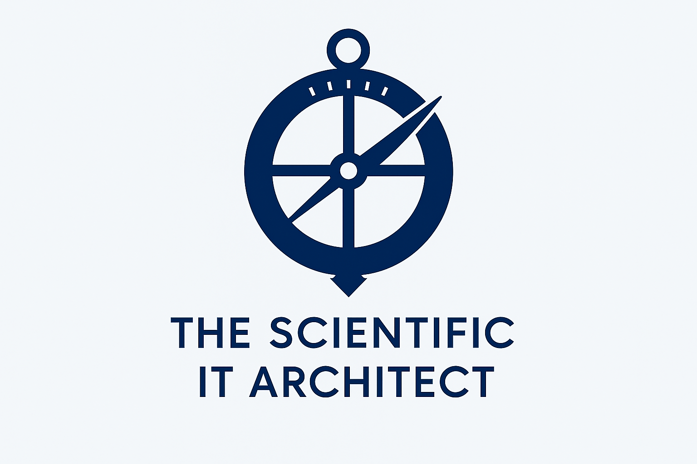

Just as ancient navigators relied on precise instruments to cross vast oceans, modern engineers navigate complex systems through disciplined troubleshooting. This site is dedicated to the craft, science, and mindset behind performance tuning, combining observation, structured reasoning, and technical rigor to guide systems toward clarity and optimal flow.
My approach to troubleshooting is anchored in five core principles: Observation, Hypothesis, Replication, Analysis, and Resolution. These reflect both the methodical discipline of navigation and the analytical mindset of an IT architect. The astrolabe in the logo represents that heritage, an ancient precision tool used to understand position, motion, and direction long before modern instruments existed. Here, it symbolizes the same pursuit: transforming complexity into understanding.
As this site evolves, so too will the visual identity, but the underlying philosophy remains constant: precision, method, and craftsmanship.
Performance tuning is both an art and an engineering discipline. It begins by recognizing patterns—like work queues slowing a system because everything runs in serial, and discovering where parallelism, batching, or redesign can unlock throughput.
In the tutorials and case studies featured here, I break down: What serial processing looks like and why it becomes a bottleneck How queues behave under load When parallel execution helps—and when it creates new problems How to methodically diagnose issues using reproducible steps
Clear diagrams, examples, and system behaviors will guide you from symptoms to root causes, and from root causes to effective solutions.